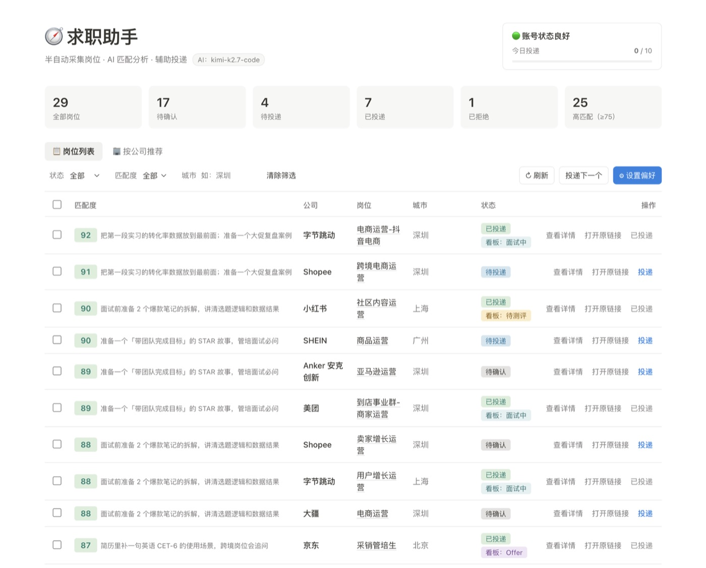
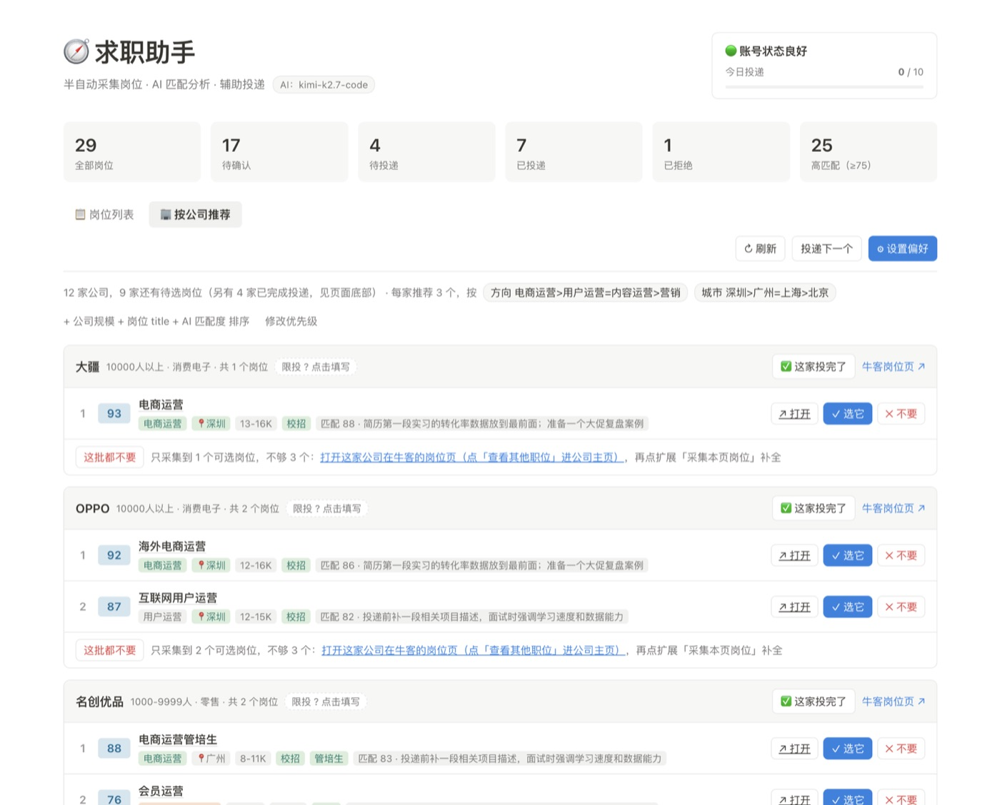
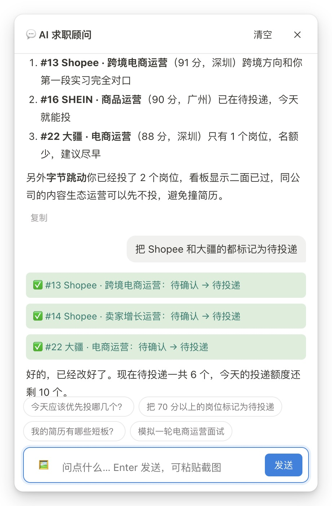

匹配分、AI 的建议和看板进度，
都在同一行


对它说「都标记为待投递」，
它真的会去改
求职助手
采集岗位、AI 匹配、按公司推荐、辅助投递
当初的烦恼牛客上几百个岗位，一个个点开看 JD、对着简历判断值不值得投，一晚上也看不完几家。
- AI 分三项打分：简历 50%、偏好 30%、城市 20%。最后的总分由后端加权，不让模型自己算
- 按公司推荐：综合匹配分、岗位方向、城市、公司规模和岗位名称排序，方向可以写成「运营>营销=产品」这样的优先级
- 对 AI 顾问说「把北京的岗位都标记为拒绝」，它会直接调用工具改数据
- AI 调用失败会退避重试，实在不行就用本地规则打分；每天的投递数有上限，防止乱投
- 「每家公司限投几个岗位」没让 AI 估：同一家公司问两次，给的数字都不一样，所以改成手填
用到：FastAPI · SQLite · OpenAI 兼容接口（function calling）· Chrome 扩展 MV3 · Swift / SwiftUI
去 GitHub 看代码